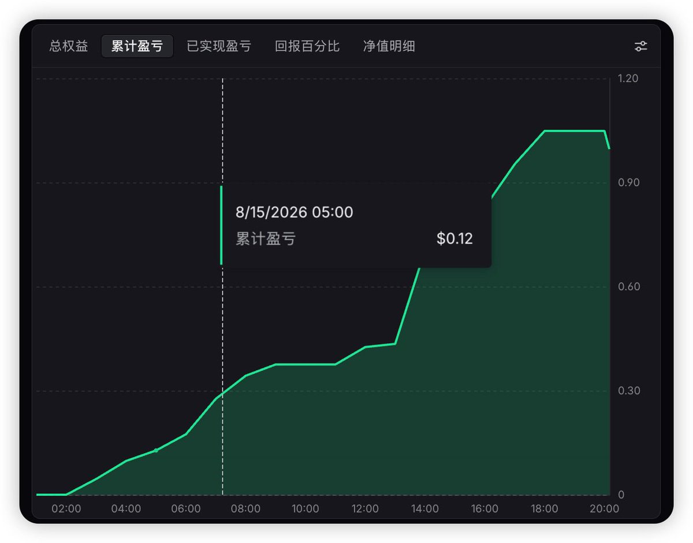

洛铃🦊Magic Caster
@LolingVerse
@0xpsyche1 @RobinhoodApp @Lighter_xyz @yourQuantGuy @Boywus @StepOneAi 根据王短鸟定理：
1万 = 1亿
1 = 1万
()

Psyche
@0xpsyche1
在@RobinhoodApp链上的@Lighter_xyz 验证了一个hft做市策略，顺便爽吃积分😁
衷心感谢x上的大佬们的推文@yourQuantGuy @Boywus @StepOneAi
如果这个帖子点赞过一万，我可以开源我的思路。 https://t.co/6hQ6SDW7aD